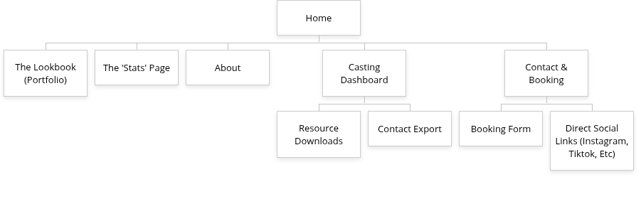

Project Overview
Click HERE to access the clients page
Project Name: The Elizabeth Aesthetic
Student: Trevor Bercher
Date: 04/02/2026
Application Description and Purpose:
- The proposed website intends to be a dynamic digital portfolio and professional landing page for fashion model Taylor Elizabeth White.
- The primary purpose of the application itself is to serve as a centralized hub for her professional brand, replacing the need for physical "cards" or pdf style attachments of her portfolio.
- It will also provide a high performance experience that is visually driven that showcases her range, physical specifications, and previous work.
- Beyond just a gallery, the application will serve as a professional tool to help facilitate bookings, manage inquiries, and provide a seamless link to her social media presence.
Intended Users:
- The website will be designed for two groups of individuals:
- Primary Users (Industry Professionals): This includes casting directors, talent agents, photographers, and brand marketing managers.
- These users will require a fast, mobile friendly interface in which they can quickly view her "look" and download high resolution images for casting considerations.
- Secondary Users (Collaborators and Fans): Stylists, makeup artists, and aspiring models who are looking for professional inspiration or contact information for creative collaborations.
Overview of Content:
- The website will be organized into high-impact sections to ensure ease of navigation:
- The Lookbook (Gallery): A categorized portfolio featuring high-resolution images organized by style (e.g., Editorial, Commercial, Runway, and Fitness).
- The "Stats" Page: A dedicated section listing physical measurements (height, bust, waist, hips, shoe size), eye/hair color, and current location.
- About/Biography: A professional narrative highlighting her experience, notable brand collaborations, and personal philosophy on modeling and creative work.
- Digital Comp Card: A downloadable, one-page PDF summary of her photos and statistics, optimized for industry professionals to print or save.
- Contact & Booking: A secure inquiry form for professional bookings, integrated with an email notification system and links to her professional social media profiles.
Client Information
- Name of the client: Taylor Elizabeth White
- Organization/Institute/Business: Her own modeling business
- Client's valid email address: taylorrelizabethh81@gmail.com
- Client's phone number: N/A
Site Map

Page Design
1. Home
- Purpose: To provide a high-impact first impression and direct users to key portfolio areas.
- Audience: All users (Casting directors, agents, fans).
- Content: Large "Hero" image, brief mission statement, and a "Book Now" call-to-action.
- Data Entry: No.
- Validations: N/A.
- Interactivity: Navigation menu, social icons, and a primary CTA button.
- Actions: Clicking "Book Now" navigates to the Booking Form; nav links go to respective pages.
2. The Lookbook (Portfolio)
- Purpose: To showcase Taylor's professional range and versatility.
- Audience: Casting directors, brand managers, and photographers.
- Content: A categorized grid of images (Editorial, Commercial, Freelance, Swimwear, etc.).
- Data Entry: No.
- Validations: N/A.
- Interactivity: Image filter buttons (e.g., "Show Runway Only"), lightbox image pop-ups.
- Actions: Clicking a thumbnail opens a high-res lightbox; clicking a category filters the visible grid.
3. The "Stats" Page
- Purpose: To provide accurate physical data for fitting and casting requirements.
- Audience: Agents and casting directors.
- Content: Table of measurements (Height, Bust, Waist, Hips, etc.) and eyes/hair color.
- Data Entry: No.
- Validations: N/A.
- Interactivity: Print button or "Copy Stats" button.
- Actions: Clicking "Print" generates a printer-friendly version of the stats table.
4. About
- Purpose: To humanize the brand and provide professional background.
- Audience: All users.
- Content: Professional bio, experience narrative, and a live Instagram "Behind the Scenes" feed.
- Data Entry: No.
- Validations: N/A.
- Interactivity: Hyperlinks to external press or social media.
- Actions: Clicking social links opens new tabs for Instagram/Tik Tok.
5. Casting Dashboard
- Purpose: A utility hub for industry pros to grab assets quickly.
- Audience: Agents and Casting Directors.
- Content: Downloadable PDF headshots and contact files.
- Data Entry: No.
- Validations: N/A.
- Interactivity: Download buttons and a "Save to Contacts" (V-Card) button.
- Actions: Resource Downloads: Triggers automatic download of ZIP or PDF files. Contact Export: Downloads a vcf file to the user's device.
6. Contact & Booking
- Purpose: To convert interest into professional inquiries.
- Audience: Potential clients and brands.
- Content: Inquiry form and direct social media links.
- Data Entry: Yes (Name, Email, Project Type, Message).
- Validations: Required field checks, email format validation (Regex), and character limits for messages.
- Interactivity: Drop-down menu for "Project Type" and a "Submit" button.
- Actions: Clicking "Submit" triggers a success message and sends an email notification to Taylor.
Dynamic Functionality on the Website
Interactive Photo Gallery (The Lookbook)
- Description: A JavaScript-driven gallery that allows for seamless filtering and lightbox effects without reloading the page.
- Reason: Models need to show diversity. Filtering allows a casting director looking for "Commercial" work to hide irrelevant "Editorial" shots instantly, improving user experience.
Eample URL: Select Model Management
Dynamic Stats Converter (The "Stats" Page)
- Description: A toggle switch that uses JavaScript to convert measurements from Imperial (inches) to Metric (cm).
- Reason: High-end modeling is global. An agent in Paris needs to see centimeters, while a client in NYC needs inches. This provides professional utility.
Eample URL: Model Management Stats Guide
Form Validation & Feedback (Contact & Booking)
- Description: Real-time form validation that provides instant visual feedback (green/red borders) as the user types.
- Reason: Ensures the model receives high-quality, actionable leads without missing contact information.
Eample URL: Square Space Forms
V-Card Generator (Casting Dashboard)
- Description: A button that generates a downloadable VCF (Virtual Contact File) via JavaScript.
- Reason: Speed is everything in casting. Allowing an agent to "One-tap" Taylor into their phone contacts makes her more likely to be called for last-minute work.
-
Eample URL: Linktr.ee